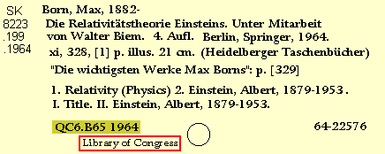

[Top]
-
Retrospective Conversions Procedural Outline
Copy:
LC Call Number

050
QC6‡b.B65 1964
When
deriving
or
cre *
,
accept
the LC Call number if it is on the copy, but
do not add
it from the card if it is not present.
Note:
When inputting the LC Call Number, make sure that the card is from the
Library of Congress
, known by its name at the
bottom of the card
.
Go back to:
Subjects
Continue with:
Holdings
[Top]
-
Retrospective Conversions Procedural Outline